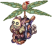
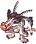
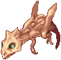
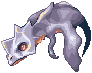
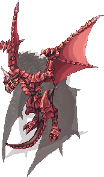

Airship Assault
| This quest or instance is repeatable. | ||
|---|---|---|
| Cooldown | Tickets Available | |
| 23 hours. | Solo: 0 | Party: 0 |
Overview
| Requirements | |
|---|---|
| Base Level: | 125 |
| Starting Point: | dali02 136/79 |
| Items: | - |
| Prerequisite(s): | - |
| Rewards | |
| Experience: | - |
| Items: | - |
The Airship Assault instance is part of Heroes' Trails, where you follow the adventures of Chaos and his friends. In this instance, you must help them survive the airship assault, and in return you will have a chance of obtaining Airship equipment set and Ferlock equipment set.
Enter the Dimensional Crack and talk to Explorer Lion /navi dali02 136/79, or use the Warper and select Heroes Trails > Airship Assault to enter this instance.
Walkthrough
- Upon entering, you will find yourself at the Airship. Talk to Fenrir, then listen to the conversation of Captain Ferlock, Iris and Chaos.
- The Witch Arcana appears alongside her minions. Monsters here cannot be fought. Proceed to the lower deck.
- Kill all monsters on the floor. The monsters resemble Beholder (passive) and Rotar Zairo (aggressive).
- Upon finishing, a message will appear. Proceed to next floor.
- Kill all monsters on the floor. The monsters resemble Blue Acidus (passive) and Gremlin (aggressive).
- After you're done, talk to Iris on the eastern side of the ship. The monsters have reached the Engine room, there's no saving the airship now.
- Go back to the previous floor, which is now in flames.
- Kill all monsters on the floor. The monsters resemble Beholder (passive) and Gold Acidus (aggressive).
- NOTE - You can skip this floor by entering the warp to the upper floor.
- Head up to the deck, and talk to Iris.
- Defeat the dragon Wyvern, the witch's strongest minion. He uses no skills, therefore all of his attacks are blockable with Safety Wall.
- Talk to Iris. By this time, Airship Captain Ferlock finds his weapon, and starts shooting everyone in his anger.
- "Knock out" Captain Ferlock by defeating him to help him regain his senses. He doesn't have skills either, all of his attacks are blockable with Pneuma.
- Upon beating some sense into the Captain, talk to him and Chaos.
- Exit the ship.
Enemies
| Image | Name | Level | HP | Size / Race / Element |
|---|---|---|---|---|
|  | Rotar Zairo | 113 | 15,900 | Large / Formless / Wind 2 |
|  | Gremlin | 118 | 20,313 | Medium / Plant / Water 2 |
| Beholder | 118 | 20,313 | Medium / Plant / Water 1 | |
|  | Gold Acidus | 130 | 48,430 | Large / Dragon / Holy 2 |
|  | Blue Acidus | 130 | 40,718 | Medium / Plant / Water 1 |
|  | Wyvern | 117 | 300,000 | Large / Dragon / Dark 4 |
Captain Ferlock
|
130 | 3,000,000 | Large / Dragon / Dark 2 |
Rewards
| Image | Name | Slot | Description |
|---|---|---|---|

|
Airship's Armor | Armor | All stats +1
MaxHP +1000 MaxSP +100 Mdef +10 If equipped with Airship's Boots and Airship's Cloak, MaxHP +25%, MaxSP +25%, and increase movement speed. Unrefineable |

|
Airship's Cloak [1] | Garment | Neutral resistance +10%. Flee +20. Variable cast time -20%.
Unrefineable |

|
Airship's Boots | Footwear | AGI +1, ASPD +10%.
Unrefineable |

|
Costume Ferlock's Hat | Costume Upper | Costume headgear of the Airship Captain Ferlock. |

|
Ferlock's Armor | Armor | MaxHP +500. MaxSP +50. MDEF +10. All Stats +1.
If refined to +7, MaxHP +500, MaxSP +50. If refined to +9, MaxHP +200, MaxSP +20. If refined to +12, MaxHP +300, MaxSP +30. If equipped with Ferlock's Cloak and Ferlock's Boots, MaxHP +25%, MaxSP +25%, and increase movement speed. If the total refine level of all Ferlock's Armor set equipment is 30 or higher, additional MaxHP +5%, MaxSP +5%. |

|
Ferlock's Cloak [1] | Garment | Neutral resistance +10%. Flee +20. Variable cast time -10%.
If refined to +7, variable cast time -10%. If refined to +9, variable cast time -10%. If refined to +12, variable cast time -5%. |

|
Ferlock's Boots | Footwear | AGI +1, ASPD +5%.
If refined to +7, AGI +1, ASPD +5%. If refined to +9, AGI +1, ASPD +5%. If refined to +12, ASPD +1. |
You may also obtain these cards from Airship Assault.
| Card | Type | Effects |
|---|---|---|
| Weapon Card | Long ranged physical damage +1%.
Every 2 refine levels, additional long ranged physical damage +1%, CRIT +1. | |
| Weapon Card | ATK +30. Anti Material Blast damage +30%, Hammer of God damage +30%.
If refined to +10 or higher, additional Anti Material Blast damage +30%, Hammer of God damage +30%. |